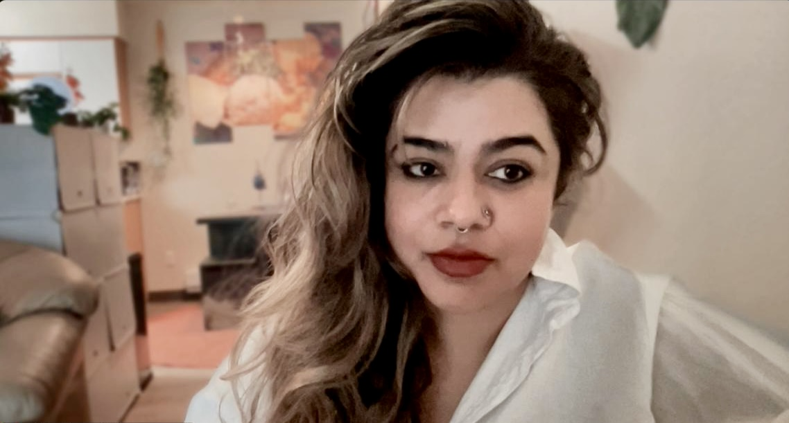
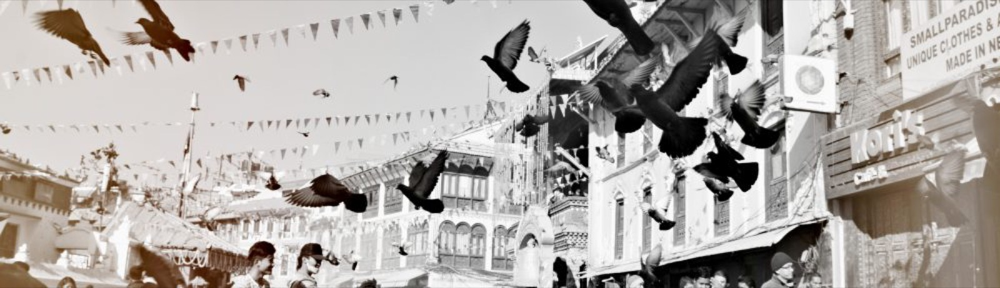
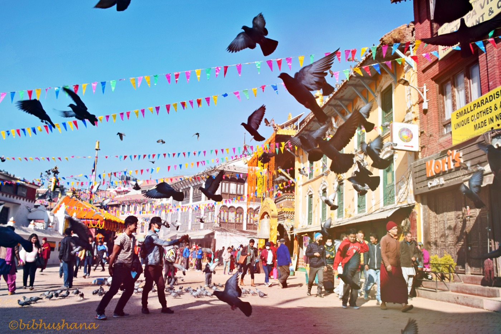
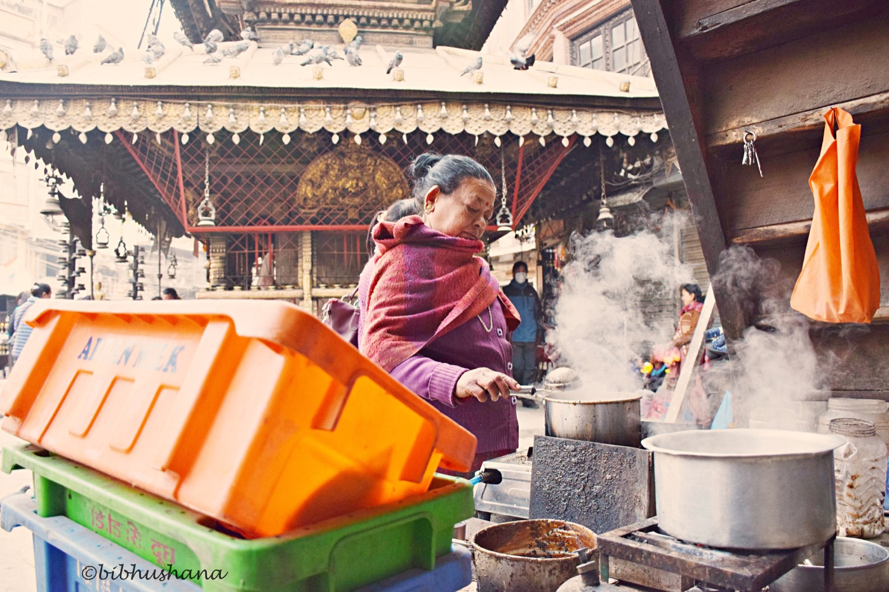
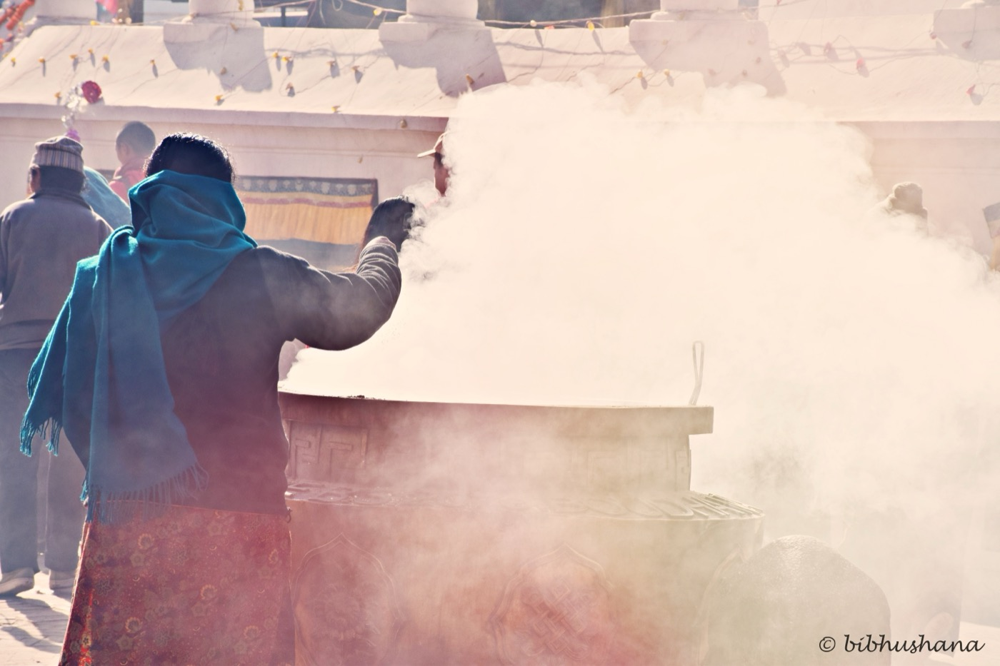
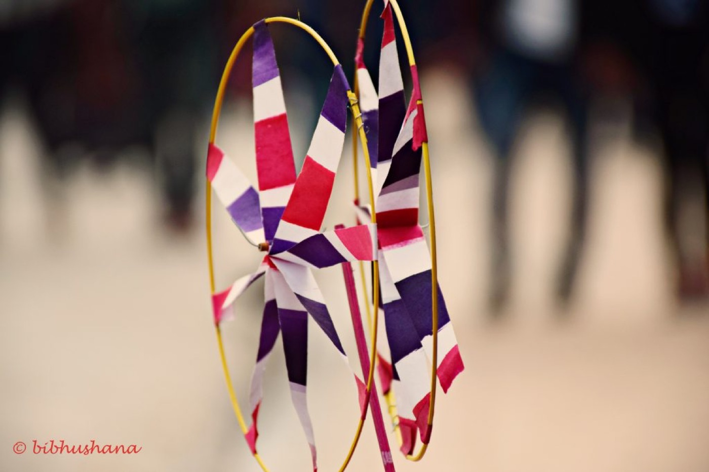
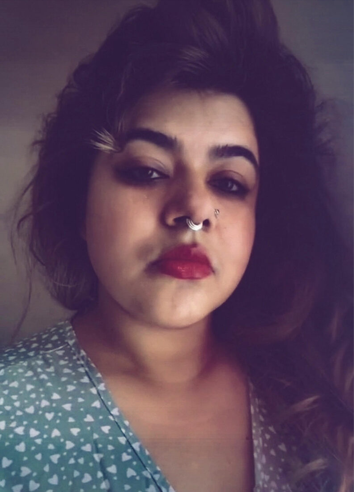

Nepali scholar, feminist rhetorician, and anti-colonial digital humanist. Her research and teaching emerge from the intervening philosophies and praxes of Internationalism and Global South Solidarities (GSS) — building decolonial feminist knowledge systems as a transformative and dignified force within academia and beyond.

Bibhushana Poudyal is a Nepali Assistant Professor of English at Washington State University (WSU). She is from Nepal where she completed her MPhil in English and taught graduate and undergraduate courses on literary studies, cultural criticism, and writing. She completed her PhD from the University of Texas, El Paso.
Her research, teaching, administrative, and service interests are grounded in anti-oppressive approaches to Internationalist Feminist Rhetorics, Global South Rhetorics, Public Rhetorics, Critical Cultural Rhetorics, Technical and Professional Communication, and Digital and Multimodal Humanities, Archives, Storytelling, Writing, and Literacies.
She is currently serving on a College of Arts and Sciences' inaugural Equity and Outreach Advisory Council at WSU. She aims to build and practice solidarity among academic workers and community members committed to making decolonial feminist knowledge systems, experiences, and voices of the global majority and global plurality as a transformative and dignified force within academia and beyond.
Her works revolve around comparative antiracism, anticolonial praxes, intersectional and internationalist feminisms, and multimodal digital humanities.
PhD, Rhetoric and Writing Studies — University of Texas, El Paso
MPhil in English — IACER, Pokhara University, Nepal
MA in English — Tribhuvan University, Nepal
Assistant Professor of English, Washington State University
Affiliate Faculty, Women, Gender, and Sexuality Studies
Buchanan Distinguished Assistant Professor (2024–2026)
Program in Women's, Gender, and Sexuality Studies, WSU
Equity and Outreach Advisory Council, WSU
Digital Archives · Design Justice · Digital Humanities · Technical & Professional Writing · Critical Pedagogy

A multimodal digital and scholarly research project bringing together examples from South Asia, the Middle East, the Americas, Africa, and Turtle Island to demonstrate the vicious continuum between rhetorical violence and material violence — and what the field and subfields of Humanities and Social Sciences can do to confront the ways empire, capitalism, racism, heteropatriarchy, and digital colonialism silence, erase, and exploit Global South communities — while also tracing the insurgent strategies those same communities deploy to survive, resist, revolt, reclaim, and speak back.
This book analyzes how gendered female bodies and non-phallic bodies function, are rhetoricized as functioning, are made to function, or are functioned upon in two extremized spaces — the private and the public. It examines heteronormative rhetorics built around cis women, trans women, trans men, and queer bodies through policies, jurisdictions, media, and laws. The book provides a framework for challenging the phallic symbolic order of patriarchy, heteronormativity, capitalism, colonialism, racism, and imperialism.
A justice-driven open scholarship initiative in the humanities, supported by WSU's highly competitive New Faculty Seed Grant. This project extends the work of Global South Solidarities into digital storytelling methodologies that center the voices and knowledge systems of the global majority.


Explores digital archives, the rhetorical dimensions of technology, and frameworks for anti-oppressive scholarly interventions in digital humanities.
Examines antiracist pedagogical frameworks across global contexts, centering comparative approaches to teaching justice and equity in higher education.
Investigates how rhetorical constructions of race and gender operate in public discourse, and explores feminist strategies for building alternative worlds.
Taught undergraduate rhetoric and composition courses, technical writing, and workplace writing at the University of Texas, El Paso.
Complete course materials — syllabi, resources, weekly assignments, and student work — openly accessible through the Global South Solidarities digital humanities platform. Teaching as an act of solidarity.
An interdisciplinary seminar examining how AI intersects with biopolitical governance — featuring interactive D3.js visualizations, embedded media, and open reading lists.
VIEW ON GSS →Archival practice through a postcolonial lens — interactive design, historical document aesthetics, custom typography, and open course materials exploring archives as sites of power.
VIEW ON GSS →Centers antiracist pedagogies that actively dismantle racism through comparative, transnational frameworks — examining teaching praxis as political and ethical action.
VIEW ON GSS →Traces the rhetorics of racism to expose how discourse constructs racial hierarchies — examining media, policy, and everyday language as sites of rhetorical violence and resistance.
VIEW ON GSS →Foregrounds practices of resistance and the imaginative labor of building just futures — engaging antiracist rhetorics and feminist worldmaking as liberatory praxis.
VIEW ON GSS →
A digital humanities platform for genocide studies, postcolonial analysis, and Global South scholarship — building solidarity through decolonial feminist knowledge systems.
VISIT GSS →A multimodal digital archival project closely connected to instagramming, rethinking how the Global South is represented, archived, and spoken about in digital spaces.
@BIBHUSHANAA →
For more information, please contact me at
bibhushana.poudyal@wsu.edu
Department of English, Washington State University, Pullman, WA
